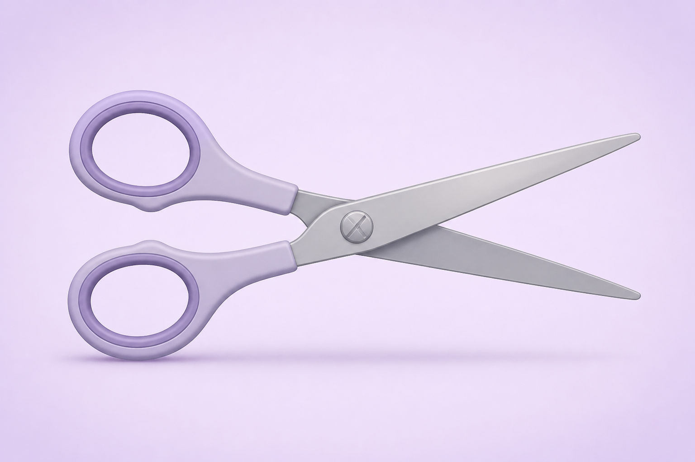
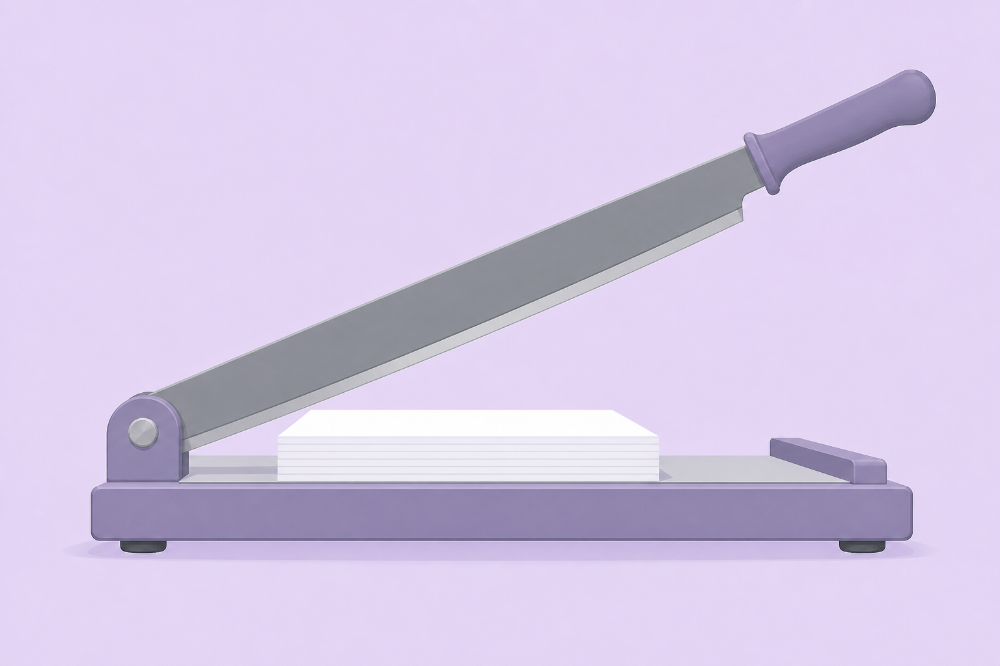
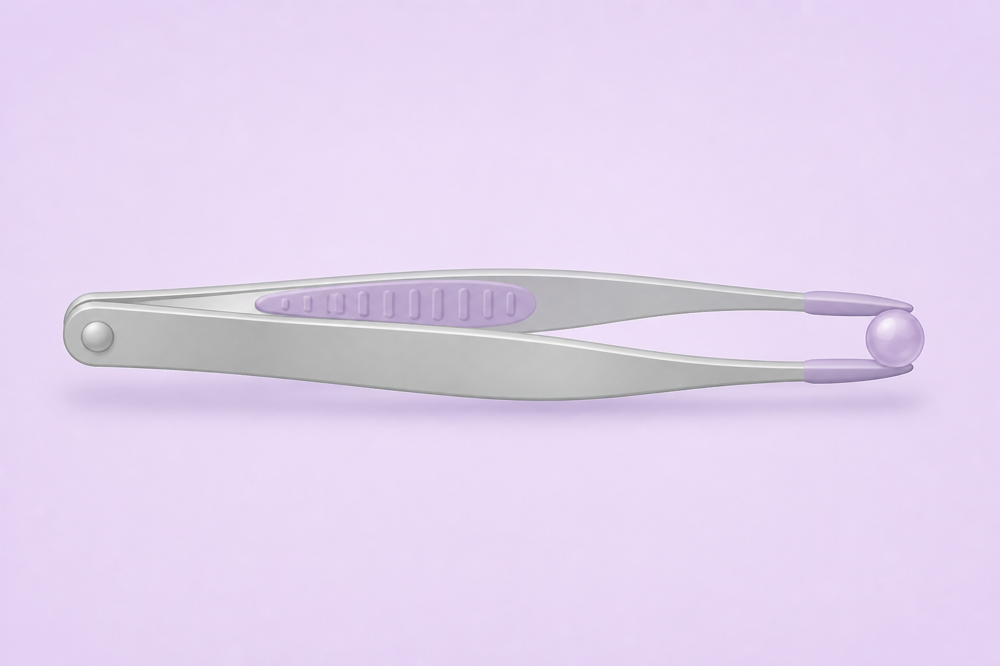

三大類槓桿
每一類槓桿的力點、支點和重點排列方式都不同，因而有不同的功用。將滑鼠停在圖片上即可顯示標註。
一
第一類槓桿
支點在中間重點和力點在兩邊，支點位於中央。功用是改變施力的大小和方向（不一定省力）。 實例：剪刀。

將滑鼠移到圖片上顯示標註
力點
施力
支點
重點
負荷
- 支點中央的螺絲，剪刀繞著它轉動。
- 力點手握的把手，是施力作用的位置。
- 施力手指按壓把手所施加的力（力，有方向）。
- 重點刀刃剪切物件的位置，是負荷作用的位置。
- 負荷被剪物件對刀刃的抗力（力，有方向）。
槓桿原理簡圖（第一類：支點在中間）
二
第二類槓桿
力點在外重點和力點在同一邊，力點在外。功用是省力。 實例：裁紙刀。

將滑鼠移到圖片上顯示標註
支點
力點
施力
重點
負荷
- 支點左端的鉸鏈，刀臂繞著它轉動。
- 力點最右端的手柄，離支點最遠。
- 施力手向下壓手柄所施加的力。
- 重點刀刃壓向紙張的位置，介乎支點與力點之間。
- 負荷紙張被切斷時的抗力。
槓桿原理簡圖（第二類：力點在外、重點在中間）
三
第三類槓桿
重點在外重點和力點在同一邊，重點在外。功用是費力，但省時（移動距離較小）。 實例：鑷子。

將滑鼠移到圖片上顯示標註
支點
力點
施力
重點
負荷
- 支點左端兩臂接合處。
- 力點手指按壓的中間位置，介乎支點與重點之間。
- 施力手指夾壓所施加的力。
- 重點右端夾住物件的尖端，離支點最遠。
- 負荷被夾物件對夾嘴的抗力。
槓桿原理簡圖（第三類：重點在外、力點在中間）